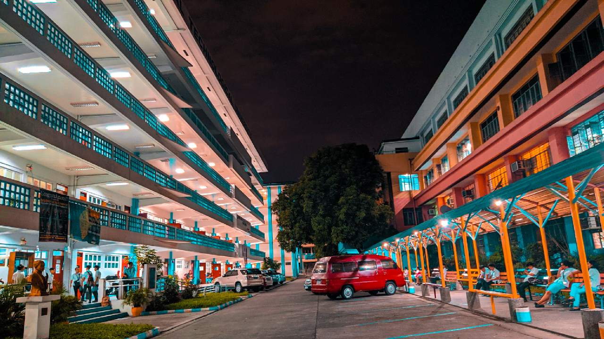

Student Page
Rizal Technological University is a state-funded university located in Mandaluyong City, Philippines. It is known for its engineering and technology programs, as well as its business and management programs. The university is considered as one of the best schools in the Philippines and it is known for its strong emphasis on hands-on, practical learning experiences. Many students have reported good experiences with the professors and the quality of education at the university. The facilities are also considered to be well-maintained and up-to-date. Overall, RTU is considered as a good university for students who want to get a solid education and have good career opportunities.
Rizal Technological University (RTU) is known for its strong engineering program. The university offers undergraduate and graduate degree programs in a variety of engineering disciplines such as Civil Engineering, Mechanical Engineering, Electrical Engineering, Computer Engineering, and many more. The university's engineering program is known for its strong emphasis on hands-on, practical learning experiences, which allows students to apply the knowledge they have gained in the classroom to real-world scenarios. Many students have reported that the professors in the engineering program are knowledgeable and approachable, and the facilities are well-maintained and up-to-date. The university also has good laboratory and research facilities for the students. Graduates of the engineering program have good job prospects and are highly sought after by employers. Overall, RTU is considered a good choice for students interested in studying engineering.
Rizal Technological University (RTU) offers a variety of master's degree programs across different disciplines such as engineering, business, information technology and more. The graduate programs are designed to provide students with advanced knowledge and skills in their chosen field of study, with a combination of coursework and research, with the goal of preparing them for professional practice or further academic study. The MBA program is well-known and designed to provide students with in-depth understanding of business concepts and skills necessary for success in today's global business environment.
The Masters in Engineering program at Rizal Technological University (RTU) is a well-known program which aims to provide students with advanced knowledge and skills in their chosen field of engineering. The curriculum is designed to prepare graduates for leadership roles in the engineering profession and develop the skills and knowledge necessary to solve complex engineering problems.